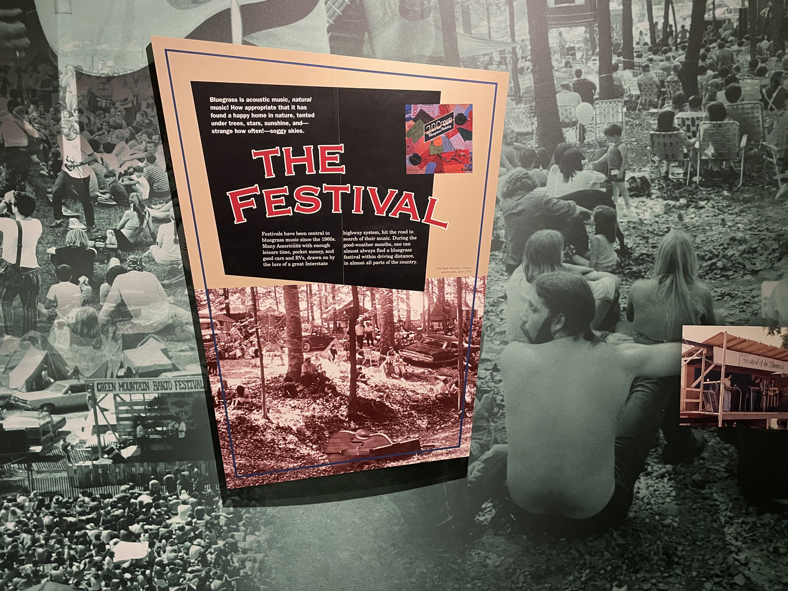

The Festival Era
Its Showtime
 Bluegrass festivals gained popularity in the late 1960s and 1970s and continue to be very popular today. This section shows how bluegrass music festivals helped re-energize the genre by introducing the culture to a new generation of fans beyond the southeast while creating regional sounds such as California bluegrass, jam grass, and new grass.
Bluegrass festivals gained popularity in the late 1960s and 1970s and continue to be very popular today. This section shows how bluegrass music festivals helped re-energize the genre by introducing the culture to a new generation of fans beyond the southeast while creating regional sounds such as California bluegrass, jam grass, and new grass.
 In the 1960s, the concept of the “bluegrass festival” was first introduced, featuring bands on the same bill that had previously seemed to be in competition with each other for a relatively limited audience. Carlton Haney, from Reidsville, North Carolina is credited with envisioning and producing the first weekend-long bluegrass music festival, which was held in Fincastle, Virginia in 1965.
In the 1960s, the concept of the “bluegrass festival” was first introduced, featuring bands on the same bill that had previously seemed to be in competition with each other for a relatively limited audience. Carlton Haney, from Reidsville, North Carolina is credited with envisioning and producing the first weekend-long bluegrass music festival, which was held in Fincastle, Virginia in 1965.

The soundtrack to the movie Deliverance also featured bluegrass music, specifically Dueling Banjos, performed by Eric Weissberg on banjo and Steve Mandell on guitar. The Nitty Gritty Dirt Band’s Will the Circle Be Unbroken triple LP set, released in 1972, introduced artists like Earl Scruggs, Doc Watson, Jimmy Martin, Maybelle Carter, Roy Acuff, and others to pop music fans and brought the authentic sounds of bluegrass and traditional country music to new audiences. In 2001, the triple-platinum soundtrack for the Coen Brothers movie, O Brother, Where Art Thou?, helped to attract even wider audiences to bluegrass music.
Next Exhibit